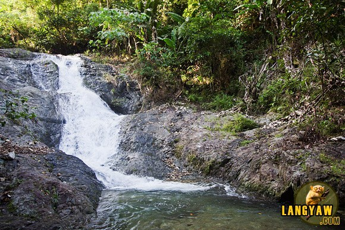
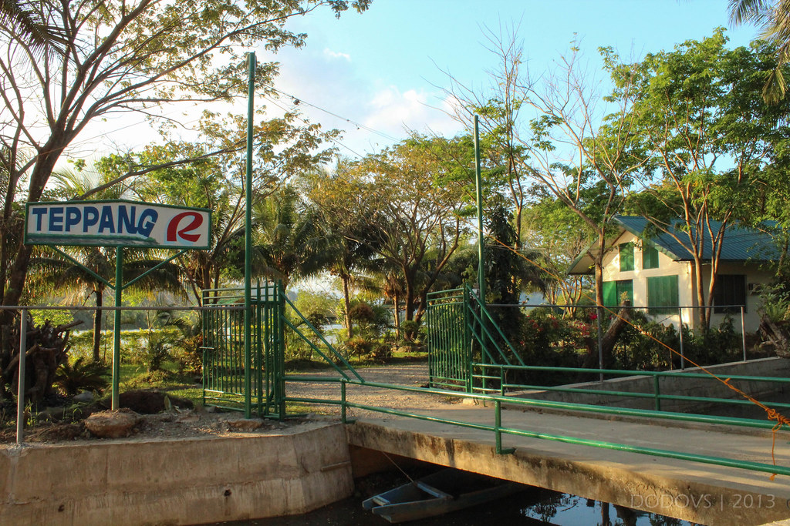

Lakaylakay-Baketbaket

The natural rock formations of the coast of Claveria can make you teary-eyed not just because of their beauty but also because of the Lakay-Lakay Legend that tells of the stones formerly that of a small fishing family who lost their son to seas because of a mistake,and that they now stand as protectors of other fishers.
Claveria Beach

I find traveling around Claveria cheap as you dont nee to charter a bout to take you to the best beaches,perfect for budget travelers.You can just walk or ride a tricycle or jeep to get the best destinations.
Sentinela

The gorgeous Sentinela Beach is devoid of tourists. The talcum white and coast here is fringed by rock formations. If Taggat Lagoon has Lakay Lakay(OldMan) and Apo Baket(Old Woman), Sentinela Beach is home to Baket Baket,which is believed to be the couple's son. Legend has it that a wealthy family became greedy that is why they were punished and turned into rocks.
Mabnang Falls
The good looking of Mabnang Falls just has been unattractively developed. The basin has been cemented to create a catch pool like the Portabaga Waterfalls. But there is a rather charming pool before the hike to the waterfall which offers an incredible view of the vast agricultural land below it.
TeppangR
They also accept reservations for occasions and event receptions. Teppang R boasts a great view of the river where migratory birds flock every early morning.